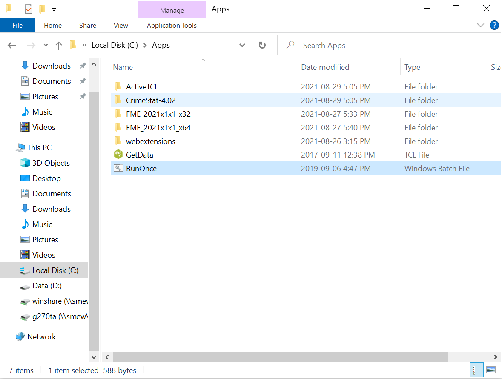

Tips for Geography Lab Computers
Table of contents
Using Geography Lab Computers
This video gives an overview of some important steps when using the lab computers.
Initalize your H:/ Dirve
When you first logon to geography lab computers with your account find C:\Apps\RunOnce.bat in the file manager. Double click on it to run it. This will initalize your account and set up access to your H:/ drive.

Work Locally, Save Remotely
Work Locally
During your lab, you should save your work to C:\temp. This is a folder stored locally on the computer you are working on. Since it’s the same machine you’re working on, ArcGIS Pro can easily and quickly access and save files in this folder.
- Avoid saving files to the Desktop or Documents folders and try to empty the Downloads folder frequently. These folders are all part of your user profile which travels to/from the server when you log in/off. The more data there is in the profile the longer it will take to log in/off. We had a student with 106GB on profile and it took 45 minutes to get in!
Save Remotely
The C:\temp drive can accessed by multiple users. A single computer in room 115 might have 20-30 different students accessing it (in person + remotely) in a given week. Each time a new user logs on, the C:/temp folder is at risk for being overwritten.
- It is EXTREMELY IMPORTANT that you save your work elsewhere before you log off. When you sign up for your Geography lab account, you will be given server space known as your H:/ drive folder; you should save your work here. To do so, follow these steps:
1 Save your Map document and close ArcGIS Pro or any other software you may be using (Word, Excel, etc. …)
2 Launch My Computer, and navigate to C:\temp
3 Right click on your lab folder in C:\temp and select Copy
4 Navigate to H:/ and paste your lab folder here
Steps for Retrieving Work from H:/
When you come back next time to complete the assignment, you will transfer the files in the reverse direction. This is because the H:/ drive is stored on a networked server, not the local machine. ArcGIS Pro will run slowly if you try to work directly from the H:/ drive, which is why you must transfer your files first. To transfer your files:
1 Log in
2 Use My Computer to find C:\temp and delete all the files you find there since they are likely not yours and you don’t want to get mixed up.
3 Navigate to your H:/ drive, select your current lab’s folder , and copy it to C:\temp
4 Resume your work